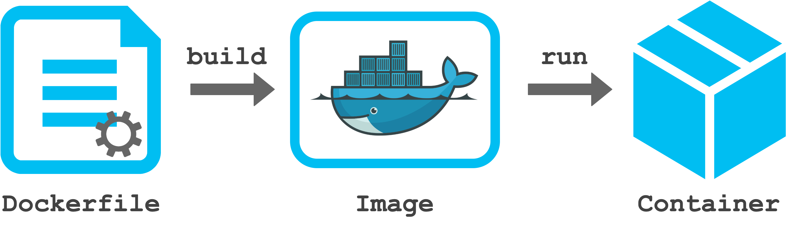
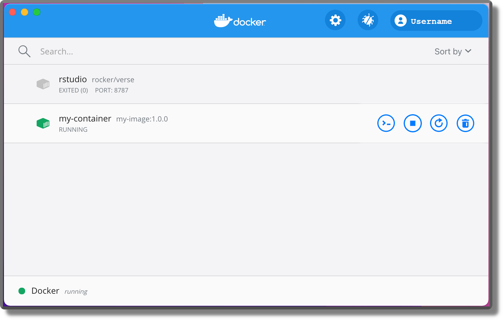
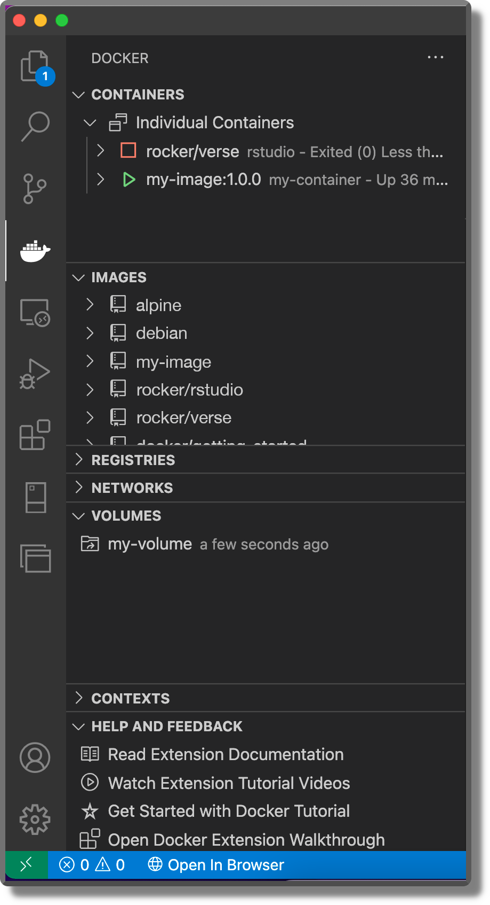

Chapter 12 Docker
In the previous chapters, we learned to organize all our files and data in a well structured and documented repository. Next, we learned to use Git and GitHub for tracking changes and managing collaboration during the development of our project. Finally, we introduced dedicated tools for managing the analysis workflow pipeline and creating dynamic documents.
We are only one step from guaranteeing the reproducibility of our results. In Chapter 11, we discussed how to manage packages and other dependencies of our preferred statistical software. However, we still need to control for differences between specific software versions, operating systems, or other system aspects (.g., system libraries or available compilers). In this chapter, we introduce Docker and the container technology that allows us to create and share an isolated, controlled, standardized environment for our project. We have reached the Holy Grail of reproducibility.
12.1 Containers
“But it works on my computer!?!” – Anonymus Programmer
Sometimes it happens that our code runs fine on our machine but fails on someone else’s machine. Or even worse, that we obtain unexpected different results running the same code on different machines. Well, containers are the answer to these issues.
A container is an isolated, controlled, and portable environment that can be easily shared and used by other colleagues. Inside a container, we can collect all the elements and required dependencies of our project. Next, we can share the container with other colleagues allowing everyone to run our project in the exact same environment as if everyone were using the same computer. Containers are a huge step towards reproducibility as we are no longer limited by differences between operating systems, software versions or other settings. Deploying our analysis using a container (plus all the other recommendations discussed in this book) guarantees the reproducibility of our results.
12.1.1 Containers and Virtual Machines
Containers and virtual machines both are forms of virtualization that allow us to emulate different computer systems on the same machine. However, there are some important differences:
- Virtual Machines (VM). VMs are an abstraction of the physical hardware. A special software layer, called hypervisor, manages the virtualization of multiple environments connecting the machine infrastructure (i.e. the physical hardware) to the different VMs. Each VM has its own Guest Operating System, libraries and applications. VMs are robust and secure systems, isolated from each other. However, they are usually large in size (tens of gigabytes) and they require minutes to boot (i.e., start).
- Containers. Containers are an abstraction at the Operating System (OS) level. A special container engine (e.g., Docker) manages the different containers. Each container has its own applications and dependencies but they share the same Host OS kernel (see “Details-Box: A Linux Kernel for Everyone” below). Containers are usually lightweight (tens of megabytes-few gigabytes) and they take just seconds to start. Thanks to their scalability and portability, containers have become industry standards for services and application deployment.

Figure 12.1: Image retrieved from Docker official documentation (https://www.docker.com/resources/what-container)
Both containers and VMs have their pros and cons and the choice between the two depends on the specific needs. Using a container allows reproducibility of the results and this is usually enough in most research projects. To learn more about containers and VMs, see https://www.docker.com/resources/what-container, https://www.backblaze.com/blog/vm-vs-containers/, or https://stackoverflow.com/questions/16047306/how-is-docker-different-from-a-virtual-machine.
12.2 Docker Getting Started
Docker (https://www.docker.com/) is one of the most popular container engines. Using Docker we can easily build, share, and run our preferred containers. Docker (and containerization in general) is a very huge topic. There are so many features and applications we can create using docker. Although things can become complicated very quickly, there are many solutions already available that we can implement right away. However, at least a minimal programming knowledge (e.g., basic use of the terminal; see Chapter 6) is required to work with Docker.
In this section, we provide a gentle introduction to Docker that will allow us to learn its basic features. In Section 12.3, we present some other slightly more advanced Docker features that are useful to manage our containers.
To learn more about Docker, see the official Get Started guide https://docs.docker.com/get-started/ or Docker Tutorials and Labs (https://github.com/docker/labs). However, These guides are more oriented toward programmers that want to deploy applications using Docker containers. Another useful Docker tutorial with a focus on R and RStudio is available at http://jsta.github.io/r-docker-tutorial/. Finally, as we dig deeper into the more advanced features of Docker, we will spend lots of time navigating the official documentation (https://docs.docker.com/).
Docker can appear very complex and intimidating at first but, as we will become more familiar with it, we will love it (hopefully).
12.2.1 Docker Elements
Before starting to play with containers, let’s describe the main ingredients of the Docker workflow. Using Docker, we have three main elements:
Dockerfile. A text file with the instructions defining how to build an image. We can think of it as the recipe used to create an image.- Image. A special file that represents the prototype of a container. We can think of it as the original mould from which multiple new containers are created.
- Container. An instance of an image is a container. Here is when things come to life. We can create several running containers from the same image.

To summarize, we start by defining a Dockerfile with all the instructions to create the desired container. Next, we build an image (i.e., a prototype) of our container. Finally, we run the image to obtain a running container and get the work done. In the next sections, we describe each step in more detail.
Often we find the term “Docker daemon” in the Docker documentation available online (or in error messages). No worries, our machine is not possessed by evil spirits.
A daemon is simply a computer program that runs as a background process (see https://en.wikipedia.org/wiki/Daemon_(computing)). The Docker daemon is the process that manages images, containers, and all other elements in the Docker workflow.
12.2.2 Install Docker
The installation procedure depends on the specific operating system. Install Docker following the instructions at https://docs.docker.com/get-docker/.
Note that, on macOS and Windows machines, we need to install Docker Desktop (simply follow the instructions at the previous link). Docker Desktop is an application that allows us to run Docker containers. We need to open Docker Desktop every time we work with Docker (this will start the Docker daemon).
As described in the previous section, containers are an abstraction at the Operating System (OS) level and all containers share the same Host OS. Therefore, we may wonder: how can Docker manage different OS (i.e, macOS, Windows, and Linux) on different machines allowing reproducibility? To answer this question, let’s clarify some points.
Containers share the same Host OS kernel. A kernel is the lowest level of an operating system that is closer to the hardware. The kernel deals with basic services like memory management, process management, device driver, and system calls. On top of the kernel, we have all the other operating system applications and user interfaces that allow us to interact with the computer.
Docker is based on a Linux kernel. Wait! How can this be possible? If we have already installed a Linux OS on our machine, Docker can run containers directly using our kernel. All Linux distros (e.g., Ubuntu or Debian) are based upon the Linux kernel. But, what if we are on macOS or Windows machines? Well… the answer is Virtual Machines. When we install Docker on a macOS or Windows machine, we are also installing a Linux Virtual Machine. This allows Docker to run containers using a Linux kernel on different operating systems. Therefore, Docker allows reproducibility as all containers run on a Linux kernel, independently of our actual OS.
Docker also introduced Windows containers https://docs.microsoft.com/en-us/virtualization/windowscontainers/. Note that Windows containers can only run Windows applications and they require Windows OS on the host machine.
Docker Installation Under the Hood
On a Linux machine, installing Docker will install only Docker Engine, the core of Docker that allows us to build and run containers.
On a macOS or Windows machine, instead, installing Docker will install Docker Desktop. Docker Desktop is an easy-to-install application that includes Docker Engine plus all the elements required to run Docker on macOS and Windows.
Docker Desktop also includes some extra tools (e.g., Docker Compose; see Section 12.3.2) that facilitate the building, sharing, and running of Docker containers. On Linux, these tools have to be installed separately.
12.2.3 Dockerfile
A Dockerfile is a text file with all the instructions to build an image. An example of Dockerfile is,
#---- Dockerfile ----
FROM ubuntu:18.04
# Install packages
RUN apt-get update \
&& apt-get install -y curl
# Get and run my app
COPY . /app
RUN make /app
CMD python /app/app.pyComments are preceded by # (note that # could also assume different meanings in some conditions; see https://docs.docker.com/engine/reference/builder/#syntax). Whereas, all the other commands in the Dockerfile are the instructions to create the image and each command is a new layer of the image. Let’s introduce the main instructions:
From <image>:<version>. TheFrominstruction allows us to define a Base Image from which we can start building our image. By doing this, we can take advantage of the images already available online on Docker Hub (https://hub.docker.com/). We can find plenty of images for all possible needs and some images are even officially supported by Docker. Usually, these images provide a good starting point for the majority of users. We only have to find the image that better suits our needs and point to it specifying<DockerHub-Namespace>/<Repository>:<version>(e.g.,nvidia/cuda:<version>). Note that it is important to always indicate the exact starting image by specifying the version tag (see Section 12.2.3.2). In Chapter 13, we introduce available images to work in R.RUN <command>. TheRUNinstruction allows us to execute specific commands in a shell. Note that the Linux default shell is/bin/sh, but this depends also on the Base Image used. To specify the desired shell we can use the syntaxRUN <path-to-shell> -c '<command>'(e.g.,RUN /bin/bash -c 'echo Hello World!'). Moreover, we can use backslashes ("\") to split long commands into multiple lines. This instruction can be used, for example, to install other packages not available in the Base Image.Copy <host-path> <image-path>. TheCopyinstruction copies files or directories from our host machine to the container image. This instruction can be used to copy all our application files into the container image.CMD <command>. TheCMDinstruction allows us to define a default command to run when our container starts. This instruction can be used, for example, to initiate our application. Note that whileRUNinstructions are executed during the image building time creating a new image layer, theCMDinstruction is executed only when running the image. Moreover, we can specify only oneCMDinstruction in aDockerfile.
Other common instructions are:
ADD <src> <image-path>. TheADDinstruction copies files or directories to the container image. TheADDandCOPYare similar, butADDhas some additional features, such as tar extraction and retrieving files from remote URLs.COPYshould be preferred if the specificADDfeatures are not required.LABEL <key>=<value>. TheLABELinstruction adds metadata to an image by specifying a key-value pair. For example, we can add the maintainer email or the licensing information.ENV <key>=<value>. TheENVinstruction allows us to define environment variables that can be used in the subsequent instructions. Note that these environment variables will persist when a container is run from the resulting image.WORKDIR <path-wd>. TheWORKDIRinstruction sets the working directory for the instructions that follow it in theDockerfile.EXPOSE <port>. TheEXPOSEinstruction is used to specify the network ports on which the container listens at run time.SHELL ["executable", "parameters"]. TheSHELLinstruction allows us to define the default shell used. On linux, the initial default shell is["/bin/sh", "-c"].VOLUME ["/path-to-volume"]. TheVOLUMEinstruction allows us to create directories for persistent data storage. Volumes’ functioning is described in detail in Section 12.3.1.
By combining these instructions, we can create a custom image according to our needs. Docker is a very versatile tool with many features that allows us to create different kinds of applications and services. This process may seem very complex at first as we need to be familiar with many programming arguments (e.g., shell commands, file system management, and network management). In most research projects, however, we will need only a couple of simple instructions to create our image. Usually, in most Dockerfiles we simply need to:
- Select a Base Image
- Install the required packages
- Add all the relevant files
- Execute the commands to get everything ready
Therefore, we don’t have to be a Docker ninja master, but simply need to learn the basics to create our own containers and understand other people’s Dockerfiles.
We can find a complete list of Dockerfile instructions and detailed information for each command in the official documentation at https://docs.docker.com/engine/reference/builder/. Moreover, Dockerfile best practices are described at https://docs.docker.com/develop/develop-images/dockerfile_best-practices/.
Before moving on, let’s discuss a few other important aspects to take into account when creating a Dockerfile.
12.2.3.1 Layer Caching
All instructions in the Dockerfile need to be specified in the exact same order as they are required to be executed. When building the image, Docker will execute each command one at a time in procedural order (i.e., from top to bottom) and each command will become a new layer of the image.
The concept of layers of an image is important. Any changes or additions to the Dockerfile require rebuilding the image again to obtain the desired results. Unfortunately, building an image from zero can take several minutes. To limit this issue, Docker implements a smart caching system which allows us to save time. Docker retrieves from cache all the image layers that precede the changes made and builds the image layers from there on.
To take advantage of this feature, first, we need to define large layers that are unlikely to change (e.g., installing dependencies) and only at the end do we define layers that are likely to be modified. This could save us a significant amount of time.
To learn more about layer caching see https://docs.docker.com/get-started/09_image_best/#layer-caching
12.2.3.2 Image Version Tag
When indicating a Base Image in the Dockerfile, we should always specify the exact version tag. For example,
FROM alpine:3.15.0If we do not specify the version tag, latest will be automatically applied by default. This approach, however, is not recommended. The latest tag does not have any special meaning per se, but it is simply the default tag when no other tags have been specified. That is, the latest tag does not automatically indicate the latest published image version but it is a simple word as could have been notag.
However, many developers tag their latest image version with the latest tag. In these cases, without specifying the version tag we will obtain the latest published image version. However, this is still not recommended for two main reasons:
- Hindered Reproducibility. The main Base Images are constantly updated, thus yesterday’s
latestimage may not be the same as todaylatestimage. If we do not specify the version tag, other colleagues could end up using different images versions preventing reproducibility. - Unpredictable Behaviour. The
latesttag is static, it is not dynamic. That is, it does not check automatically for the latest updates and therefore colleagues may end up using different image versions. Let’s clarify this point with an example. Suppose John and Sally are working on the same project using a Docker container. The container is based on thealpine:latestBase Image. John has never used analpineimage before so, the first time he builds the image, the latest image version is downloaded and used. On the contrary, Sally has already worked with differentalpinecontainers. When she builds the image the first time, Docker will find a copy of thealpine:latestimage already available on her machine and it will use it although thelatestimage on her machine refers to an older image version. Therefore, John and Sally will end up using two different containers.
To summarize, the take-home message is, “always specify the version tag”. This will save us from a lot of trouble.
12.2.3.3 Files Permissions
If not already familiar with file-system permission, it is worth taking a look at https://ryanstutorials.net/linuxtutorial/permissions.php.
To summarize, permissions indicate what we can do with a file:
- Read (r). We can see the file content.
- Write (r). We can edit the file content.
- Execute (x). We can execute the file (script).
Moreover, file permissions are specified separately for:
- Owner. The user that owns the file.
- Group. Every file can be assigned to a group of users.
- Others. Other users that are not members of the group or the owner.
We can change file owner/group using the shell command chown [OPTION]... [OWNER][:[GROUP]] FILE... and we can specify file permission using chmod [OPTION]... MODE[,MODE]... FILE....
By default Dockerfile instructions are executed as root (i.e., the conventional name of the user with all permissions). Consequently, ownership of all folders, files, and volumes specified in the Dockerfile is assigned to the root user. By default, containers also run as root ensuring us all permissions on all files in the container. However, this may not be the best thing from a security point of view.
Without going into details, the Docker container root is also the host system root. Therefore, if the Docker container has access to some files on our host system these could be modified or deleted with root permissions. A quite important security vulnerability issue (see https://stackoverflow.com/questions/41991905/docker-root-access-to-host-system).
Users and groups management in Linux and Docker is quite an advanced topic beyond the aim of this chapter. To learn more about usernames and groups in Docker, consider https://medium.com/@mccode/understanding-how-uid-and-gid-work-in-docker-containers-c37a01d01cf and https://github.com/docker/labs/tree/master/security/userns. Security is a relevant topic if we are developing a service that will be deployed on a server. In these cases, we should adopt best practices to limit security issues. For example, we could consider creating containers with isolated user namespaces (see https://docs.docker.com/engine/security/userns-remap/).
Fortunately, security issues are not so relevant in most research projects, as Docker containers are mainly used to replicate the results on a local machine. However, most Base Images do define a specific default user to use when running the image. In these cases, we must guarantee the required permission to the files added in the Dockerfile.
For example, suppose we start from a base image (my-base-image) in which the default user is my-user. Next, we copy a folder from our host system to the container. Remember Dockerfile instructions are executed as root so the added files will be owned by the user. To allow my-user to modify these files, we need to change the ownership (chown) or permissions (chmod). The Dockerfile will look like something similar to,
#---- Dockerfile ----
FROM my-base-image
# The default user is "my-user"
COPY host-folder docker-folder
RUN chown -R my-user docker-folderTo learn more about Docker file permission, see https://medium.com/@nielssj/docker-volumes-and-file-system-permissions-772c1aee23ca.
12.2.3.4 .dockerignore File
When adding files from our host system to the container using ADD or COPY instructions. We can exclude files not relevant to the build by listing them in a .dockerignore file.
We can use exclusion patterns similar to.gitignore files. For more information, see https://docs.docker.com/engine/reference/builder/#dockerignore-file.
12.2.4 Build an Image
If we are on macOS or Windows, first, remember to start the Docker daemon by opening the Docker Desktop application. This is required any time we are working with Docker.
Suppose, we are in our project directory (my-project/) and the project has the following structure,
my-project/
|-- Dockerfile
|-- README
|-- data/
|-- documents/
|-- code/In the Dockerfile, we simply copy all the project files in the image home directory.
#---- Dockerfile ----
FROM alpine:3.15.0
COPY . /home/Once the Dockerfile is ready, we can move on and build our first image by using the command,
$ docker build [OPTIONS] PATHwhere PATH indicates the path to the directory with the Dockerfile. This directory will be also used by Docker as context to execute all the instructions. This means that all the required files should be collected in the same folder as the Dockerfile.
To assign a name to our image (and optionally a tag), we can specify the option -t (or --tag) indicating the image name in the format image-name:tag. For example,
$ docker build -t my-image:1.0.0 .Note that the final "." indicates the current directory since the Dockerfile is placed in the project root directory (as it is commonly done). For more details on the build command and a complete list of available options, see the official documentation https://docs.docker.com/engine/reference/commandline/build/.
On Linux, we need to use sudo to run Docker commands. Without going into too technical details, the Docker daemon is owned by the root user. Therefore, if other users want to use Docker, we have to preface any docker command with the sudo command.
This may be quite annoying. To run docker commands as a non-root user, we can set specific group permissions. Follow the instructions at https://docs.docker.com/engine/install/linux-postinstall/.
12.2.4.1 List and Remove Images
We can get a list of our currently available images using the command docker images (or docker image ls). For example,
$ docker images
REPOSITORY TAG IMAGE ID CREATED SIZE
my-image 1.0.0 bdcd08818a09 2 minutes ago 5.59MBTogether with the image name and tag, we obtain the Image ID that can be used to uniquely identify each image (we can have different versions of the same image, each one with its unique ID).
To remove an image, we can use the command
$ docker image rm <Image-ID>For a list of all image commands, see https://docs.docker.com/engine/reference/commandline/image/.
12.2.5 Run an Image
We defined the Dockerfile and we built our image. Now it’s time to run our first container by using the command,
$ docker run [OPTIONS] IMAGEWe need to specify the desired image used to create the container (IMAGE). Moreover, we can indicate different options according to our needs. Commonly used options are:
--name <name-container>. Assign a name to the container. Remember that it is possible to initialize multiple containers from the same image, thus we can use different names to identify them.--rm. By default, containers remain available even after the container is stopped. This allows us to quickly start the container again or inspect its files. Using the flag--rm, instead, the container is automatically removed (together with all the files) when the container is stopped.-it. These are two separate flags-iand-tbut they are usually combined to run the container in an interactive mode and allocate a virtual terminal session, respectively. This allows us to get access to the container’s shell in an interactive session.-d. By default, Docker runs a container in the foreground. Using the flag-d, instead, the container is run in detached mode (i.e., in a background process). To learn more about the detached mode, see https://www.baeldung.com/ops/docker-attach-detach-container.
Moreover, we can also specify new instructions or override Dockerfile default settings when running the container. For example, we can,
-v <host-path>:<container-path>(or--volume). Attach a volume or bind mount to the container. To learn more about volumes and bind mounts, see Section 12.3.1.-e <name>=<value>. Define (or overwrite) an environment variable. This is usually done to customize the container settings.-p <host-port>:<container-port>. Map a specific container port to a host port.-u(or--user). Define the username or UID used to run the container.
For more details on the run command and a complete list of available options, see the official documentation https://docs.docker.com/engine/reference/run/.
Using the image from the previous example, we can run our container named my-container in an interactive session by,
$ docker run --name my-container -it my-image:1.0.0Once the container is initialized, a new interactive session will start in our terminal. Now, we are inside our container. Note the # prompt symbol, instead of $, indicating that we are root users (see Section Files Permissions). We can check whether our project files were copied in the home/ directory and end the session by running exit.
/ # ls -l home/
total 20
drwxr-xr-x 2 root root 4096 Jan 17 11:00 code
drwxr-xr-x 2 root root 4096 Jan 17 11:00 data
-rw-r--r-- 1 root root 74 Jan 17 10:55 Dockerfile
drwxr-xr-x 2 root root 4096 Jan 17 11:00 documents
-rw-r--r-- 1 root root 24 Jan 14 14:45 README
/ # exitIn this case, ending the session will also automatically stop the container. This could not be the case for other containers with long-running processes (e.g., web services; for more information see https://www.tutorialworks.com/why-containers-stop/).
12.2.5.1 Stop List and Remove Containers
To stop the container, we can use the command
$ docker stop <container-name> If we did not specify the flag --rm, the container will still be available after it is stopped. We can use the command docker container ls (or docker ps) with the flag -a to list all the containers available (default shows only running containers).
$ docker container ls -a
CONTAINER ID IMAGE COMMAND CREATED STATUS PORTS NAMES
fa28e5e1c2fc my-image:1.0.0 "/bin/sh" 5 minutes ago Exited (0) 2 minutes ago my-containerThis allows us to quickly start the container again using the command docker start <container-name>. Instead, if we want to definitively remove a container to free space, we use the command
$ docker rm <container-name>Note that removing a container will also delete all its files. Even if we copied our project folder from the host machine to the container using the COPY instruction, changes made in the container will not affect files on the host machine.
Remember that containers are isolated from the host machine so files in the containers are distinct from the files on the host machine. This is a problem as, removing a container, we would also lose all our results. In Section 12.3.1, we discuss solutions to allow persisting data storage in Docker.
12.2.5.2 Moving Files
We could copy files (e.g., analysis results) from the container to the host machine (or the reverse way) using the command
# Form container to host
$ docker cp <container-name>:<container-path> <host-path>
# Form host to container
$ docker cp <host-path> <container-name>:<container-path> For more details, see official documentation https://docs.docker.com/engine/reference/commandline/cp/.
12.2.5.3 Running Commands
Finally, to run a command in a running container, we use docker exec <container-name> <command> (see official documentation at https://docs.docker.com/engine/reference/commandline/exec/). For example, to connect to the shell of a running container (in this case bin/sh), we can use the command
$ docker exec -it my-container bin/sh12.3 Other Features
In the previous sections, we learned how to create and run a container. Now, let’s see some other Docker features that may be useful in our workflow.
12.3.1 Data Storage
As we have already highlighted, the container file system is isolated from the host file system. This means that, when we use a container, all changes made to the files or the results we obtain are available only in the container. If we remove the container, we will lose everything.
This may be confusing at first, as we may think that adding our project folder to the container in the Dockerfile would connect our local project folder to the container. However, this is not true. When building the container image, the current content of our project folder is copied into the container image. These are independent and, thus, future changes to our project folder will not affect the image content (we would need to build the image again).
Moreover, the containers we create from the same image are independent. Each one is initialised according to the image. Imagine we have made some changes in a container and then we remove the container. If we run another container (from the same image), we will not find the changes we previously made but the container is initialized according to the image’s initial state. We have lost our changes.
This leads to a clear question, how can we save our work if removing a container would delete everything? In Docker, there are two solutions for persisting data storage: bind mounts and volumes.
12.3.1.1 Bind Mounts
Bind mounts allow mounting (i.e., connecting) a directory (or a single file) from the host machine to a container. This allows the container to access the files on the host machine and save the changes made. When removing the container, all changes will be preserved in the directory on the host machine.
We can mount a local directory when running a container specifying the option -v <host-absolute-path>:<container-absolute-path>. For example,
$ docker run -v /Users/<user-name>/Desktop/Trial:/home/Trial/ -it my-image:1.0.0Note that both paths have to be absolute. The directory (or file) does not need to exist already neither in the host machine nor in the container. If not existing yet, the directory (or file) is created on-demand.
Bind mounts are simple solutions to allow direct access from the container to a directory (or a file) in the host system. Changes made to the files in the container are saved directly in the host system and changes made from the host system will be immediately visible in the container as well.
However, bind mounts have two main drawbacks. First, bind mounts rely on the host machine specific file system (absolute paths are different on different machines). Second, allowing the container direct access to the host file system could have important security implications.
For more details and options about bind mounts, see https://docs.docker.com/storage/bind-mounts/
12.3.1.2 Volumes
Volumes are the preferred mechanism for persisting data storage. Think of volumes as storage units that are independent of the containers. We can mount (i.e., connect) volumes to one or multiple containers allowing accessing data and saving data. When removing the container, mounted volumes will be still available allowing us to save our work between sessions.
Volumes are created and managed directly by Docker and they are isolated from the host machine. To create a named volume use the command,
$ docker volume create <name-volume>We can mount a named volume when running a container specifying the option -v <name-volume>:<container-absolute-path>. For example,
$ docker run -v my-volume:/home/my-volume/ -it my-image:1.0.0Note that, if we initialize a container with a named volume that does not exist yet, Docker will automatically create it. In this case, any data that exists at the specified location within the Docker image is added to the created named volume.
Volumes can be also defined in the Dockerfile using the instruction VOLUMES(see Section 12.2.3). This would create a new mount point. In this case, if we do not mount a named volume at the running time (using the -v option), an anonymous volume will be automatically created with any data that exists at the specified location within the docker image. Anonymous volumes behave in the same way as named volumes. The only difference is that anonymous volumes do not have a name but they are referred to by a (not very handy) random alphanumeric sequence.
We can list all the currently available volumes by,
$ docker volume lsTo remove a specific volume, use the command,
$ docker volume rm <name-volume>For more details and options about volumes, see https://docs.docker.com/storage/volumes/.
12.3.1.3 Bind Mounts VS Volumes
Volumes should be our preferred choice as they have several advantages compared to bind mounts. In particular, volumes do not depend on the host filesystem but they are managed internally by Docker. As a result, volumes are more portable and they guarantee a greater level of security compared to bind mounts.
These are very important considerations in the case of applications or online services. In the case of research projects, however, security issues are not so relevant, as Docker containers are mainly used to replicate the results on a local machine. Therefore, bind mounts are absolutely fine and they also allow us to easily access the mounted directory from our host machine as we would normally do (note that accessing volumes from the host machine is not so immediate; see https://forums.docker.com/t/how-to-access-docker-volume-data-from-host-machine/)
However, keep in mind that when working on a project using a Docker container it is important to consistently develop the project working from the container. If we continuously switch between working from the container to the local machine, we could end up having some unexpected and unpredictable behaviours. This is like running half of our project on a machine and the other half on another different machine.
For more detail about bind mounts and volumes comparison, see https://docs.docker.com/storage/.
12.3.2 Docker Compose
Multiple containers can be used to create complex applications or services. Docker Compose is a tool that helps us manage multi-container applications. Docker Compose needs to be installed separately on Linux (see https://docs.docker.com/compose/install/), whereas Docker Compose is already available within Docker Desktop on macOS and Windows.
With Compose, we use a YAML file named docker-compose.yml to configure all our application’s services. In this file, we define and manage all the containers, volumes, and other elements of our application. A docker-compose.yml looks like this:
#---- docker-compose.yaml ----#
version: "3.9"
services:
db: # First container
image: postgres
volumes:
- db_data:/var/lib/postgresql/data
environment:
- POSTGRES_USER=postgres
- POSTGRES_PASSWORD=postgres
app: # Second container
build: .
volumes:
- app_volume:/code
ports:
- "8000:8000"
environment:
- DEBUG=1
depends_on:
- db
volumes:
db_data:
app_volume:Next, we can start our application simply using the command,
$ docker-compose upWhen we are done, we can stop the application simply by using the command,
$ docker-compose downDocker Compose has many features and options that allow us to manage complex applications and services. Docker Compose, however, is an advanced topic that goes beyond the aim of the present chapter. Interested readers can find an introduction to Docker Compose at https://docs.docker.com/get-started/08_using_compose/ and detailed instructions at https://docs.docker.com/compose/.
In most research projects, we can easily get everything done using a single container. However, in more complex scenarios, Docker Compose may become a very useful tool.
12.3.3 Docker Hub
Docker Hub (https://hub.docker.com/) is an online repository with thousands of Docker images that can be used as Base Images for our containers. As we have already pointed out, many images are officially supported by Docker. Therefore, as the first step, we should usually spend some time online finding which image provides a good starting point for our needs.
We can start a container using any of the Docker images available online using the docker run command as we would do for locally available images.
$docker run [OPTIONS] <DockerHub-Namespace>/<Repository>:<version>If the specified image is not already available on our machine, Docker will automatically download the specified image from Docker Hub. Alternatively, we can explicitly download the desired image using the command,
$docker pull [OPTIONS] <DockerHub-Namespace>/<Repository>:<version>For more details, see official documentation https://docs.docker.com/engine/reference/commandline/pull/.
12.3.4 Docker GUI
We can manage the whole Docker workflow directly from the terminal. However, a Graphical User Interface (GUI) may be useful to manage some of the most common operations.
A GUI may also be very helpful for users who are not too familiar with the terminal. By using a point-and-click interface and providing visual feedback, a GUI helps less experienced users manage the Docker workflow. However, only limited options are usually available in a GUI. At some point, we will always need to open a terminal and write a line of code.
12.3.4.1 Docker Desktop
Docker Desktop provides its own dashboard (remember Docker Desktop is not available for Linux). We can see the currently available containers (running or stopped) and execute some basic operations such as starting/stopping a container, removing a container or getting access to the container terminal.

Using the Docker Desktop dashboard, we can also easily configure our Docker settings. To learn more about the Docker Desktop dashboard, see https://docs.docker.com/desktop/dashboard/.
12.3.4.2 Visual Studio Code
Visual Studio Code (VSC; https://code.visualstudio.com/) is a popular integrated development environment (IDE). VSC offers many extensions that provide tools and features to facilitate our work and customize the interface according to our needs.
VSC provides a Docker extension that allows us to easily build, manage and deploy containerized applications. Moreover, the extension enables code completion and parameter info that will assist us when editing our Dockerfile or docker-compose.yml files. A very useful feature.

To learn more about the VSC docker extension, see https://marketplace.visualstudio.com/items?itemName=ms-azuretools.vscode-docker.
Note that RStudio does not provide an extension to manage containers.
We went through many commands and things could be confused. Here is a summary of all the main Docker commands.
Images
docker build -t <name-image>:<tag> . # Build an image from Dockerfile
docker images # List all images
docker image ls # List all images
docker image rm <id-image> # Remove ImageContainer
docker run --name <container-name> <image>:<tag> # Run a container from an Image
# Other flags and options
--rm # Remove at exit
-it # Interactive terminal
-d # Detached mode
-v <host-path>:<container-path> # Attach a volume or bind mount
-e <name>=<value> # Define environment variable
-p <host-port>:<container-port> # Map port
docker ps -a # List all containers
docker container ls -a # List all containers
docker stop <container-name> # Stop container
docker start <container-name> # Start container
docker rm <container-name> # Remove container
docker cp <container-name>:<path> <host-path> # Copy from container to host
docker cp <host-path> <container-name>:<path> # Copy from host to container
docker exec -it <name-container> bin/bash # Connect to container bin/bashDocker
- Official website
https://www.docker.com/ - Official documentation
https://docs.docker.com/ - DockerHub
https://hub.docker.com/
Docker Tutorials
- Official Get Started
https://docs.docker.com/get-started/ - Docker Tutorials and Labs
https://github.com/docker/labs - R Docker
http://jsta.github.io/r-docker-tutorial/ - Compose
https://docs.docker.com/get-started/08_using_compose/
Docker Elements
Dockerfile
https://docs.docker.com/engine/reference/builder/Dockerfile best practices
https://docs.docker.com/develop/develop-images/dockerfile_best-practices/Caching layers
https://docs.docker.com/get-started/09_image_best/#layer-cachingDockerignore
https://docs.docker.com/engine/reference/builder/#dockerignore-fileBuild image
https://docs.docker.com/engine/reference/commandline/build/Images
https://docs.docker.com/engine/reference/commandline/image/Storage
https://docs.docker.com/storage/Bind mounts
https://docs.docker.com/storage/bind-mounts/Compose
https://docs.docker.com/compose/Dockerhub
https://docs.docker.com/docker-hub/Pull image
https://docs.docker.com/engine/reference/commandline/pull/Docker GUI
https://docs.docker.com/desktop/dashboard/Extension VSC
https://marketplace.visualstudio.com/items?itemName=ms-azuretools.vscode-docker
Extra
- Docker Windows containers
https://docs.microsoft.com/en-us/virtualization/windowscontainers/ - Linux permissions
https://ryanstutorials.net/linuxtutorial/permissions.php - Docker root access
https://stackoverflow.com/questions/41991905/docker-root-access-to-host-system - Usernames and groups
https://medium.com/@mccode/understanding-how-uid-and-gid-work-in-docker-containers-c37a01d01cf - Usernames and groups (II)
https://github.com/docker/labs/tree/master/security/userns - Isolated namespace
https://docs.docker.com/engine/security/userns-remap/ - Docker file permission
https://medium.com/@nielssj/docker-volumes-and-file-system-permissions-772c1aee23ca - Linux
sudo docker
https://docs.docker.com/engine/install/linux-postinstall/ - Attach detach container
https://www.baeldung.com/ops/docker-attach-detach-container - Stopped container
https://www.tutorialworks.com/why-containers-stop/ - Moving files host-container
https://docs.docker.com/engine/reference/commandline/cp/ - Running commands
https://docs.docker.com/engine/reference/commandline/exec/ - Access volume from host
https://forums.docker.com/t/how-to-access-docker-volume-data-from-host-machine/